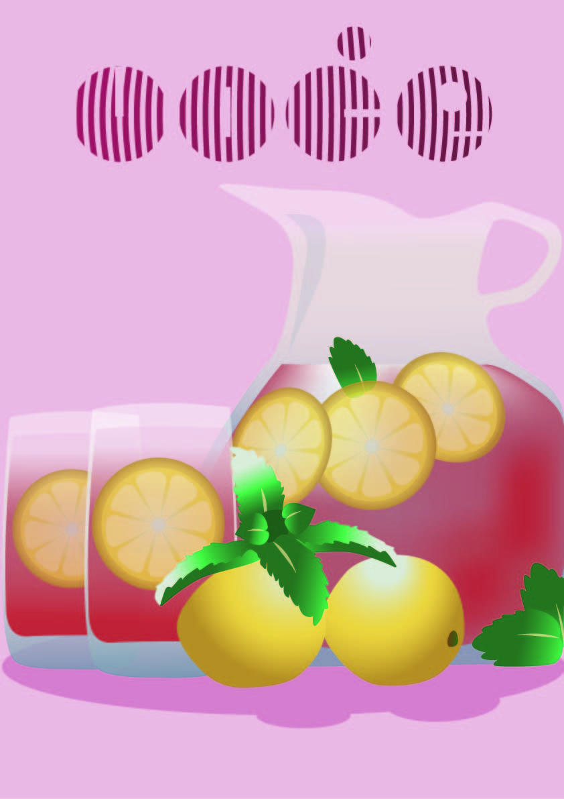

Na ovoj stranici možete vidjeti moje radove i zadatke s kolegija Digitalni multimedij 1 na kojem se obrađuju teme poput fonta,
osnova vektorske i piksel grafike, video obrade te izrade web dokumenta.
Galerija slika za vektorsku grafiku
Prvi zadatak vektorske grafike bila je izrada vlastitog fonta. Primjer fonta možete vidjeti na svakoj stranici kao naslov,
a u njemu je ispisano moje ime i prezime. Font sam radila u FontForgeu. Drugi zadatak se odnosio na crtanje Bezierovih krivulja
u koordinatnom sustavu. Druga i treća slika po redu pokazuju moje primjere zadatka. Četvrta i peta slika obrađuju treći zadatak te temu boja, izrade objekata
i transformacija. Za vlastiti primjer sam koristila svog psa kao motiv. Zadnje dvije slike obuhvaćaju posljednju temu u vektorskoj
grafici, prije projektnog zadatka, a to su izrada složenih objekata,gradijenta i transparencija. U mom slučaju koristila sam svoju ambalažu
za čaj kako bih napravila jednostavan poster koristeći zadane upute.
Font
Bezierova krivulja, precizno crtanje
Bezierova krivulja, precizno crtanje, moj primjer
Boja, transformacije
Boje,transformacije, moj primjer
Gradijenti, transparencija
Gradijenti, transparencija, moj primjer
Prvi projektni zadatak - vektorska grafika
Zadatak je bio napraviti vektorsku sliku iz dobivenog predloška te putem pisanih uputa i
prijašnjeg iskustva stvoriti zadane elemente. Moja slika je sadržavala bokal soka i staklene čaše u kojima se nalaze
kriške limuna. U prvom planu nalazila su se dva cjelovita limuna s listićima mente razbacanim uokolo. Vrat bokala se nije
vidio već sam ga dodala kako bih upotpunila sliku. Dodala sam sjene i odsjaje te sam stavila rozu pozadinu da se sve uklopi.

Projektni Zadatak
Galerija slika za piksel grafiku
U zadatcima za piksel grafiku prvo smo retuširali fotografije (prva i druga slika). Upotrijebila sam
različite tehnike retuširanja, uključujući uklanjanje manjih pozadinskih šumova zamućivanjem,
kloniranje, kopiranje većih područja, lokalno posvjetljivanje / tamnjenje i globalnu korekciju tonova.
Druga vježba temeljila se na koloriranju slike. Od crno-bijele fotografije, putem Adjustment layera, pretvorila sam
sliku u kolor. Vlastitu fotografiju, pretvorila sam u crno-bijelu i kolorirala ju s tri boje,
stvarajući pet primjera iste slike s različitim postavkama kolorizacije (slike tri i četiri). Posljednji zadatak
(slika pet i šest) bio je napraviti fotomontažu od zadanih elemenata. Fotomontažu sam postigla dobrim selekcijama,
transformiranjem elemenata pomoću perspekitvnih alata, sjenama i korekcijom boja.
Retušitanje
Retušitanje, moj primjer
Koloriranje
Koloriranje, moj primjer
Fotomontaža
Fotomontaža, moj primjer
Drugi projektni zadatak - piksel grafika
U projektu sam kombinirala baznu fotografiju s precizno izrezanim elementima iz
drugih skupina fotografija, dodajući vlastitu fotografiju na kraju svega. Koristila
sam alate za retuširanje kako bih ispravila nedostatke i uklonila neželjene dijelove.
Selekcije kanala upotrijebila sam za precizno odabiranje područja, a transformacijske alate
za prilagodbu pozicije i veličine elemenata. Nekoliko elemenata sam kolorirala u različite boje,
koristeći maske za slojeve za dodatne korekcije. Realistično sam izradila sjene kako bih postigla
uvjerljivu fotomontažu.
Projektni Zadatak 2
Video Galerija
Posljednja tema kolegija je video obrada. Kinemagraf je bio prvi zadatak ove teme. To je video isječak u kojem se
ponavljajuća sekvenca spaja sa statičnom slikom, stvarajući intrigantan efekt. Kroz korištenje Photoshopa i Shotcuta
stvorila sam vlastiti kinemagraf (slika 2). Pritom sam iskoristila gif koji sam sama animirala u aplikaciji
Flipaclip. Video uradci koji su postavljeni nakon gif formata su kompleksniji projekti rađeni u Shotcutu. Kako bih ispunila
kriterije zadatka trebala sam spojiti minimalno dva isječka te im dodati pomični i statični tekst. Video sam dodatno
uredila različitim filterima poput kontrasta, prozirnosti, tranzicija i naposlijetku sam dodala audio zapis.
Kinemagraf
Kinemagraf, moj primjer
mali komentari za profesore:
drugi Youtube video na "o meni" html stranici radi; video nije moguće dijeliti na ovaj način.
moj font pravilno radi u Adobe programima, no trenutno na stranici se ne prikazuje kako spada.
pokušala sam dodati uvećanje slika, ali negdje se desila greška i samo jedna od slika bi se uvećala bezobzira na koju sliku bih stisnula.

.jpg)